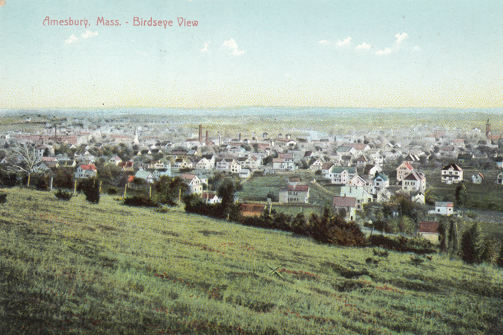
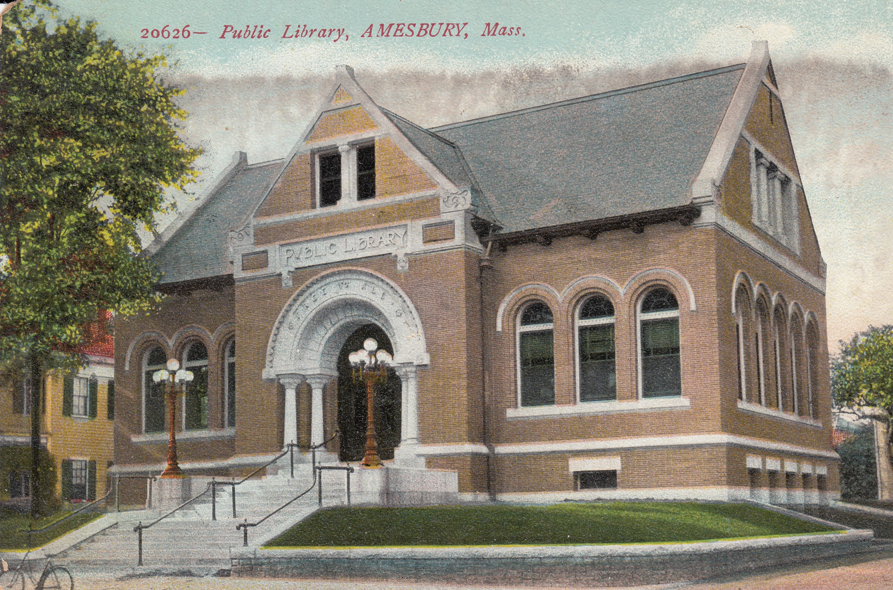
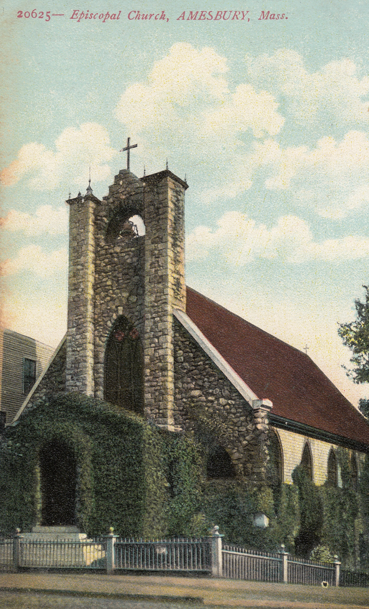
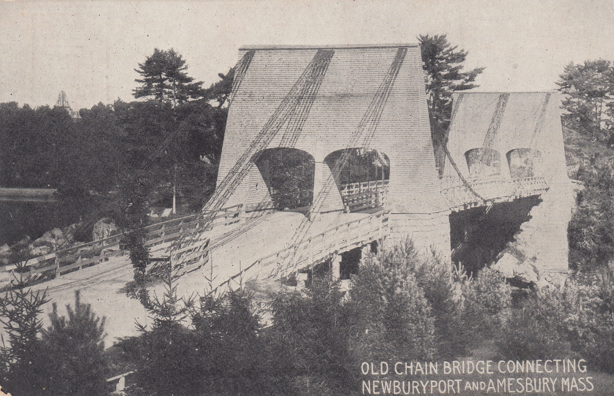
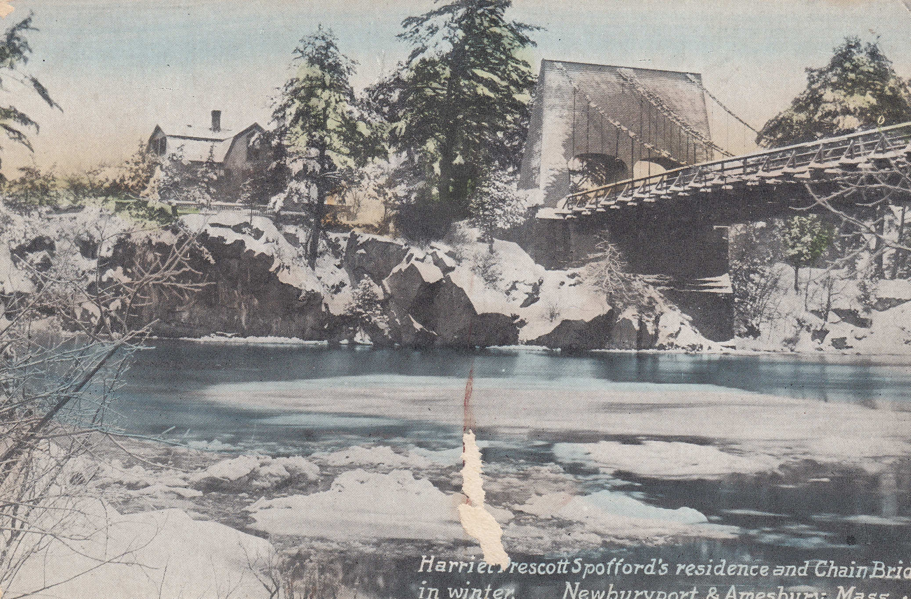
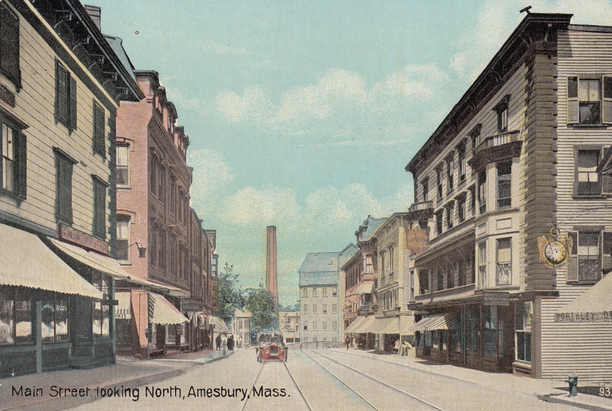

In my humble opinion, the best way to get an objective look at any New England city or town is by evaluating how cute their vintage post cards are. I'm happy to report that Amesbury is an 11/10 on this front. Postcards below part of my personal collection and yeah sometimes I send 'em too

View of Amesbury from Powow Hill - our favorite nearby hill to walk up and look out at this view but don't take our word for it.. someone made a postcard of it. Note this image was created before the nuclear power plant that now distracts the eye slightly

The library in Amesbury is a gem and looks just as it does here. It's more than 100 years old and look there's my bike out front!

Not religious but I grew up Episcopalian so I'm a sucker for a good Episcopalian Church. Still there today.


Love the Chain Bridge Bummed about the blemish on the wintry one. Will have to keep an eye out for another one of those. The snowy scene is especially charming and the Chain Bridge is lovely (unless you're riding a bike). Still there but looks different now.

You can see 52 Main St. on this one (Caleb's building, Alice's studio). It's on the right with the weird awning-nose jutting out. Crazy that the three building to the right of it are gone as the result of fire or old-age.
I've never felt like more of an old man that I do right now having just finished writing a blog post about postcards. Tempus fugit!